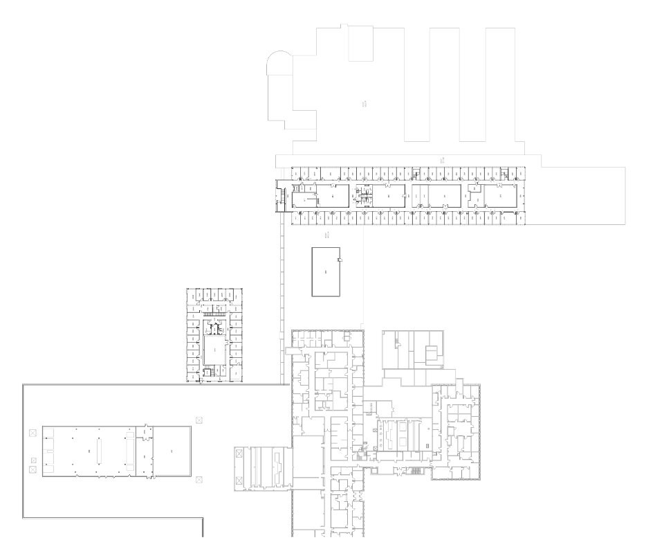
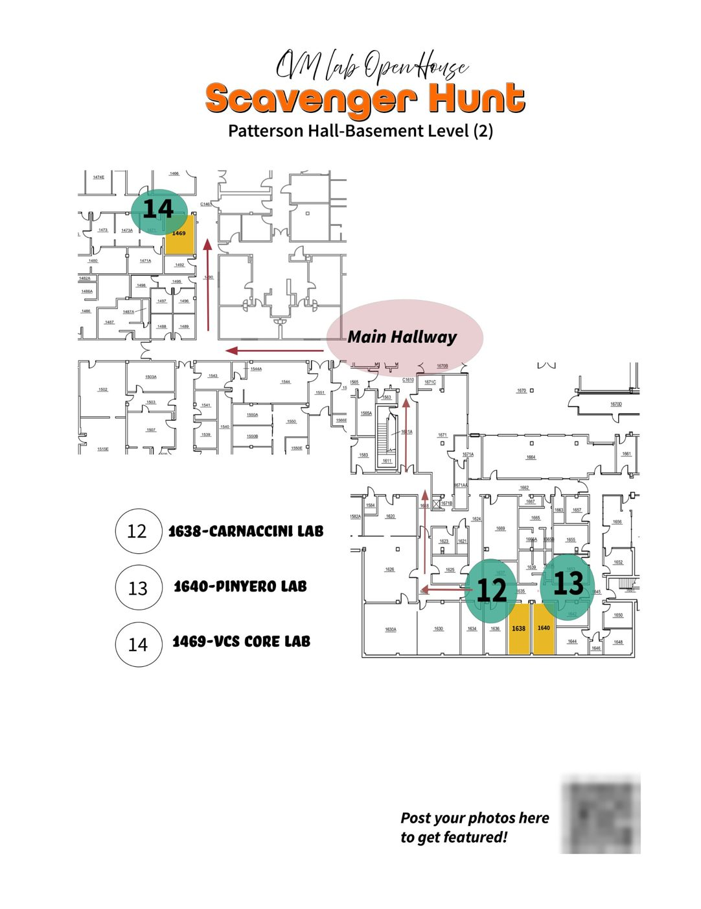
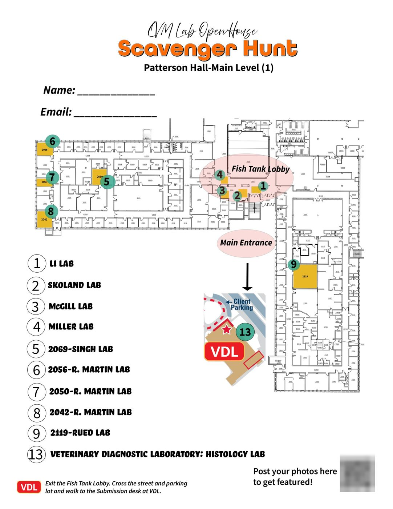
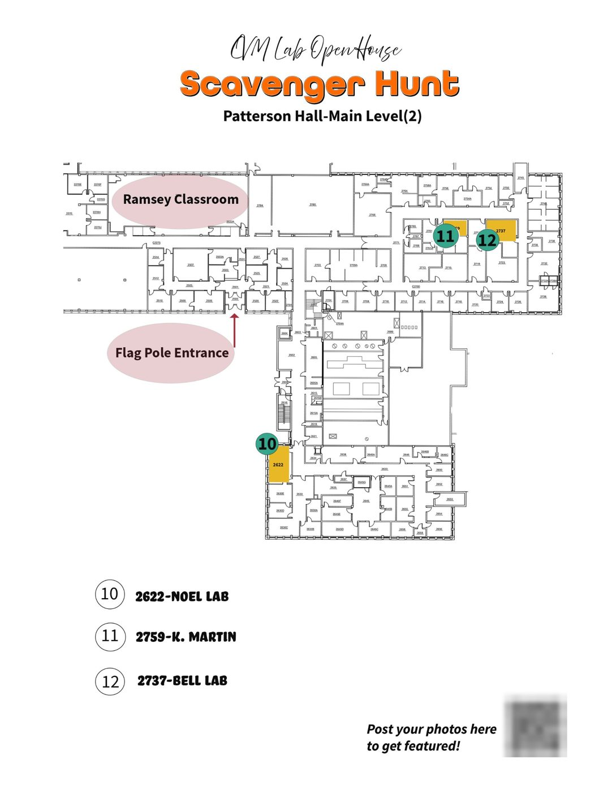

Wayfinding maps for a lab open house
Turning architectural floor plans into four visitor maps for a self-guided scavenger hunt with 27 lab stops at Iowa State's College of Veterinary Medicine.
- Context
- College of Veterinary Medicine research week, Iowa State
- My role
- Individual project: building walk-through, route planning, map design
- Scope
- Four maps, two floors, 27 stops
- Tool
- Adobe Photoshop
The challenge
For research week, the college wanted students and visitors to tour its labs. Visitors would collect a stamp next to each lab they visited. The organizers weren't sure custom maps were even possible. The only starting point was the university's architectural floor plans: accurate, but full of room numbers and with nothing to show a visitor where to go.



Process
- Walking the building. The team took me through the building with printed floor plans in my hand. As they showed me each lab, I marked up the plans: which room belonged to which lab, where the entrances and landmarks were, and how people would actually move between stops.
- Planning the route. I turned those notes into an order of stops and decided what visitors needed to see and what could fade into the background.
- Designing the maps. I built four maps in Photoshop, two per floor, so each sheet stays readable at print size.
The team noticed during the walk-through that I read floor plans easily, and those annotated plans were what made the final maps accurate.
Design choices
- One highlight color for destinations. Lab rooms are filled yellow; every other room stays in thin gray line.
- Numbered markers matched to a legend that lists each lab with its room number, with space for the stamp.
- Starting points and landmarks such as “Start here – FTL Stairs”, the Fish Tank Lobby, the Main Entrance and the Flag Pole Entrance.
- Arrows where the route isn't obvious, and an inset map that leads visitors across the street to the Veterinary Diagnostic Laboratory.
- A playful heading that makes it feel like a game rather than a building directory.






QR codes on the maps are blurred here because the event has ended.
Walking the building before designing anything is the same instinct I bring to UX research: observe the real environment first. A site map and a floor plan solve the same problem, which is helping people find their way.